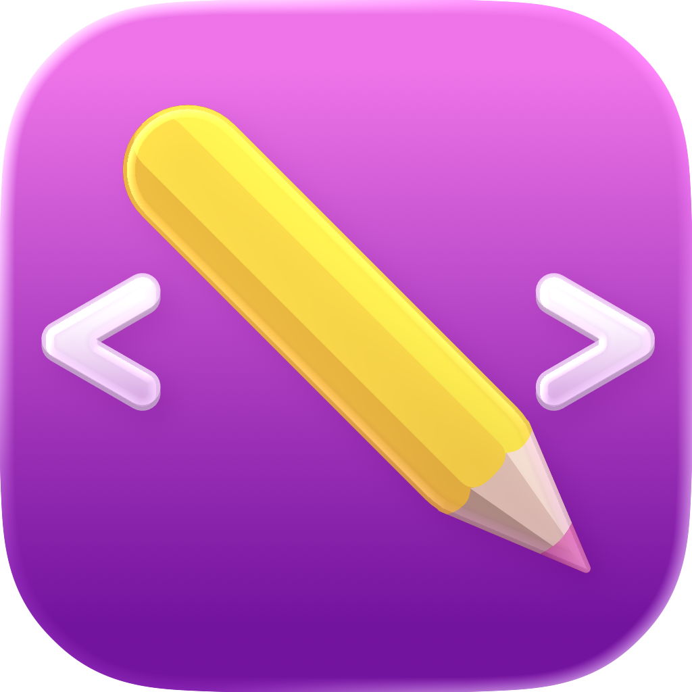
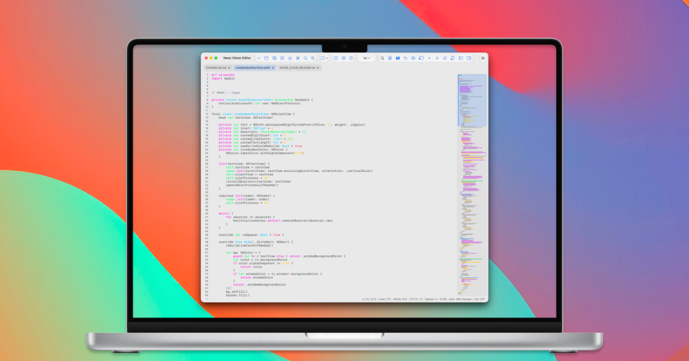
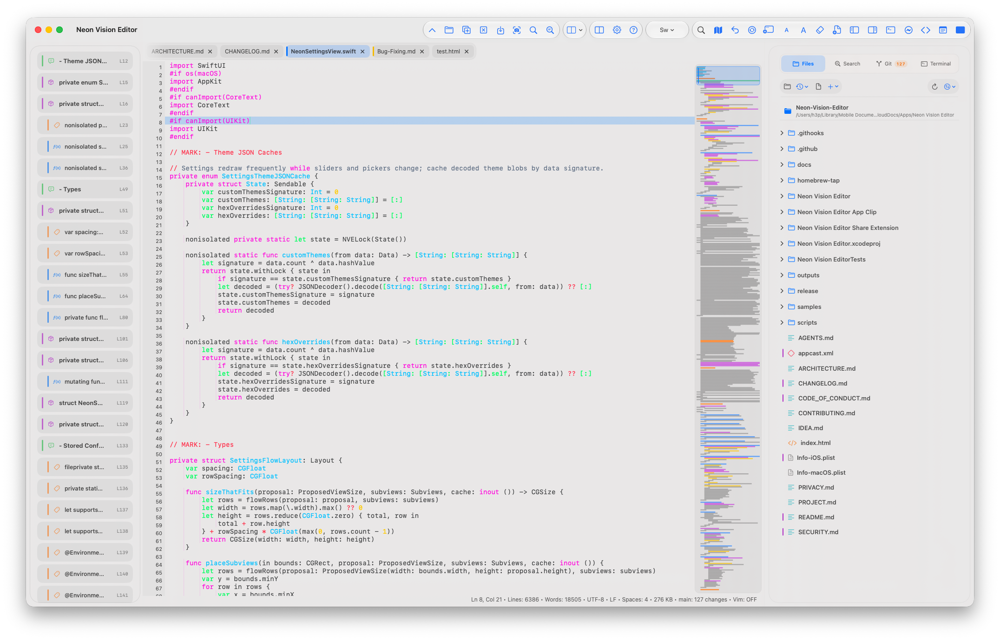
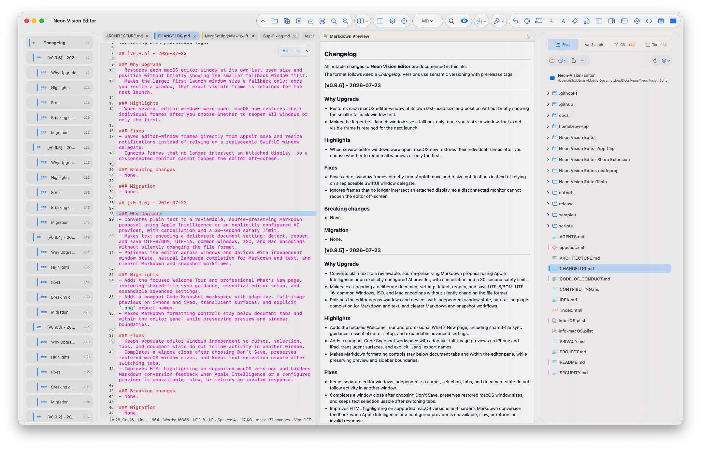

Reviewable Markdown
Turn unstructured text into a Markdown proposal while keeping the original under your control.

Neon Vision EditorNative editing across Apple devices
Neon Vision Editor keeps the useful parts of a lightweight editor: fast files, clear source, full previews, and shared documents that do not surprise you.

The everyday editor
Notes become documentation. A quick HTML edit needs a rendered check. A shared text file changes on another device. Neon is designed for these in-between moments, without turning the work into an IDE project.
Turn unstructured text into a Markdown proposal while keeping the original under your control.
Keep Markdown, HTML, and SVG source close to the rendered result instead of switching apps.
Refresh clean documents from iCloud Drive, network folders, or another app without replacing unsaved work.
From rough notes to useful structure
Copied notes, an old text document, or a rough outline often already contain the structure you need. Neon can turn that into a Markdown draft for review rather than silently changing the source.
Plain text → Markdown
On supported Macs, Markdown conversion can use Apple Intelligence. A separately configured provider can also be used when that is your preferred workflow. Either way, the result remains a proposal: you review the headings, lists, spacing, and emphasis before deciding what belongs in the document.
Cancellation, a clear unavailable state, and a safety timeout are part of the workflow. An editor should never leave you wondering whether a background action is still working.


Shared-file sync
Documents kept in iCloud Drive, network folders, or another app can change while they are open. Neon watches for those changes and refreshes clean tabs in place—without forcing you to close and reopen the file.
It preserves the context that matters: the current cursor, selection, source viewport, and preview source. If you have unsaved edits, Neon does not replace the buffer. The existing review choices remain yours.
Clean tab: refresh the updated file in place.
Unsaved changes: keep the local version protected.
Review deliberately: choose Keep Local, Reload from Disk, or Compare.
Source and rendered result
Markdown is not an afterthought in Neon. On Mac and iPad, a full preview can sit beside the source document; on iPhone, it opens as a focused reading view. The formatting controls remain with the editor, below document tabs, without covering the preview or a project sidebar.
HTML and SVG preview follow the same idea: edit the source, then see the output without leaving the file workflow. It is less about publishing polish and more about getting a reliable visual answer while you work.

One native editor, different devices
Neon is available across macOS, iPad, iPhone, and visionOS. The platform layouts change, but the core promise stays the same: open a real document, understand it quickly, make the change, and keep control over the file.
Syntax highlighting, line numbers, line wrap, indentation settings, themes, minimap navigation, code snapshots, deliberate text encoding, and independent editor windows are there when they help—not as a substitute for a focused editor.
Get the latest direct macOS build, follow development on GitHub, or try the App Store and TestFlight versions across Apple devices.